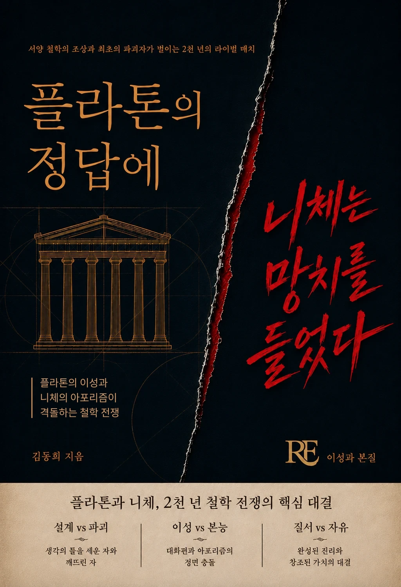

설계와 파괴, 이성과 본능, 질서와 자유. 서양 철학의 조상과 최초의 파괴자가 벌이는 2천 년의 라이벌 매치. 완성된 진리와 창조된 가치가 정면으로 충돌한다.
서양 철학의 설계자 플라톤과 그 설계를 부순 최초의 파괴자 니체. 이 책은 대화편의 이성과 아포리즘의 망치를 정면으로 맞세워, 2천 년 철학사를 관통하는 하나의 질문 — 진리는 완성되는가, 창조되는가 — 을 추적합니다.
서양철학사 입문 독자, 플라톤과 니체를 비교해서 읽고 싶은 독자.